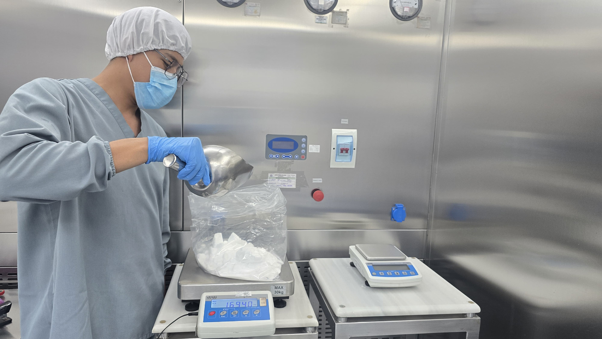

De un Puñado de Polvo a una Vida Mejor
“Un día me tocó pesar una materia prima. Solo eran unos gramos… pero meses después, supe que con eso hicieron un medicamento que llegó a hospitales. Ahí entendí que mi trabajo sí importa.”
Cada medicación comienza con algo pequeño: una báscula, una fórmula, unas manos cuidadosas. No es solo pesar. Es el primer paso para que algo que parece nada, se convierta en salud para alguien más.